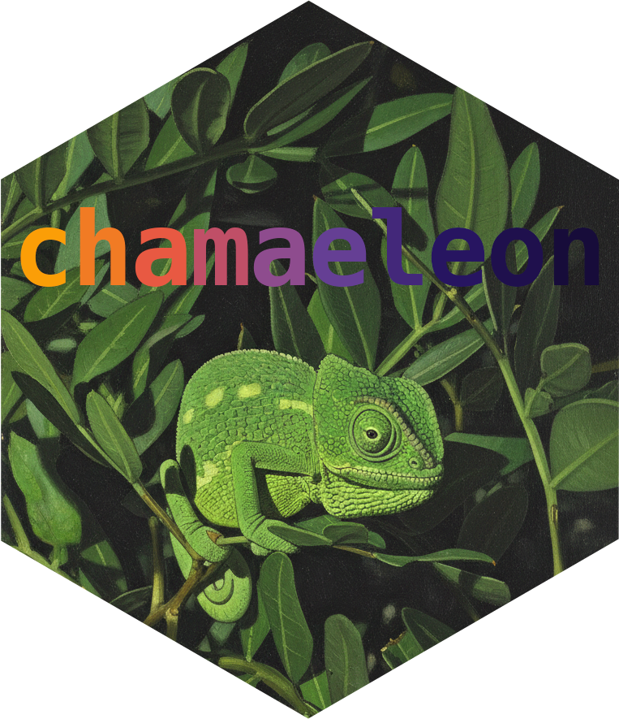
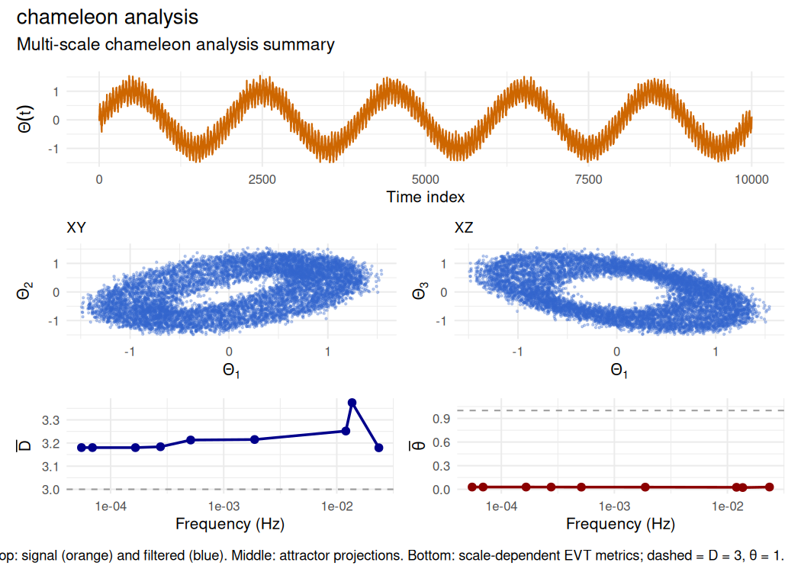
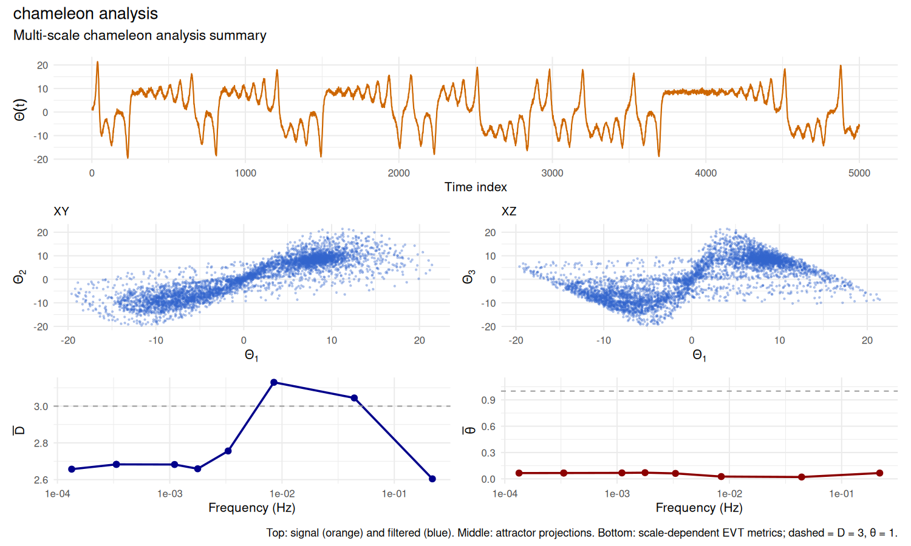

chamaeleon 


Multiscale analysis of chameleon behaviour in stochastic strange attractors
chamaeleon implements multiscale times-series analysis combining Takens embedding, multivariate empirical mode decomposition (MEMD), and extreme value theory (EVT) for non-stationary dynamical systems. Computes scale-dependent instantaneous dimension and inverse persistence to characterise chameleon attractors, a class of stochastic strange attractors whose geometric and topological properties vary across time and scales (Alberti et al. (2023) doi:10.1016/j.chaos.2023.113195). Provides a novel surrogate-based statistical testing framework for formal hypothesis testing of chameleon behaviour against scale-invariant null models, including multiple test statistics, effect-size estimation and non-stationary analysis.
What is inside
| Layer | Components | Count |
|---|---|---|
| Phase-space reconstruction |
takens_embed, estimate_embedding_params
|
2 |
| Scale decomposition (MEMD) |
memd, memd_partial_sums
|
2 |
| Extreme-value metrics |
evt_metrics, scale_dependent_metrics
|
2 |
| Chameleon analysis and testing |
chameleon_analysis, chameleon_test, chameleon_test_nonstationary, generate_surrogates
|
4 |
| Visualization | plot_trajectory_3d |
1 |
| S3 classes (with print, summary, plot) |
takens_embedding, memd, evt_metrics, scale_metrics, chameleon_analysis, chameleon_test, chameleon_nonstationary
|
7 |
The package ships canonical-validation regression tests (tests/testthat/test-validation-canonical.R) that pin the EVT dimension on Lorenz-63, the MEMD mode count on a synthetic three-mode signal, the chameleon-test p-value on a stationary sinusoid, and the Takens reconstruction fidelity on Lorenz-63.
See vignette("theory") for the mathematical foundations; vignette("statistical-testing") for the surrogate-testing details; vignette("api") for the architecture map.
Installation
# From CRAN (when available)
install.packages("chamaeleon")
# Development version from GitHub
remotes::install_github("robustecologies/chamaeleon")Theoretical background
Phase-space reconstruction
Given a scalar time series \(\{\Theta(t)\}\), Takens’ theorem guarantees that the dynamics can be reconstructed in an \(m\)-dimensional embedding space via delay coordinates:
\[\mathbf{x}(t) = [\Theta(t), \Theta(t-\tau), \ldots, \Theta(t-(m-1)\tau)]^\top\]
where \(m\) is the embedding dimension and \(\tau\) the time delay. The package estimates \(m\) using false nearest neighbors (FNN) and \(\tau\) from the autocorrelation function.
Scale decomposition
MEMD decomposes the multivariate embedded trajectory into \(N\) intrinsic mode functions (IMFs) ordered by decreasing frequency:
\[\mathbf{x}_\mu(t) = \sum_{k=1}^{N} \mathbf{C}_{\mu,k}(t) + \mathbf{R}_\mu(t)\]
Partial sums reconstruct the dynamics at frequencies above a cutoff \(f^*\):
\[\mathbf{x}^f_\mu(t) = \sum_{k: f_k > f^*} \mathbf{C}_{\mu,k}(t)\]
Instantaneous dynamical metrics
For a reference state \(\zeta^*\) on the attractor, the statistics of close recurrences follow a generalized Pareto distribution. This yields two EVT-derived metrics:
Local dimension \(d(\zeta^*)\): The number of active degrees of freedom, corresponding to the scaling exponent of the recurrence probability.
Inverse persistence \(\theta(\zeta^*)\): The extremal index measuring trajectory stability. Values \(\theta \approx 1\) indicate stochastic-like behavior; \(\theta < 1\) indicates persistent dynamics near \(\zeta^*\).
Quick start
library(chamaeleon)
# Generate test signal with multiple scales
set.seed(42)
t <- seq(0, 100, by = 0.01)
x <- sin(2*pi*0.05*t) + # Low frequency
0.3*sin(2*pi*2*t) + # High frequency
0.1*rnorm(length(t)) # Noise
# Complete chameleon analysis
result <- chameleon_analysis(x, verbose = TRUE)
#>
#> ⚙ CHAMELEON ATTRACTOR ANALYSIS
#> Time series: n = 10001, dt = 1
#> --------------------------------------------------
#> ¡ Step 1: No filtering applied
#> ⏱ Step 2: Estimating embedding parameters
#> Estimated: m = 4, tau = 314
#> ⏱ Step 3: Takens embedding (m = 4, tau = 314)
#> Embedded dimensions: 9059 x 4
#> ⏱ Step 4: MEMD decomposition (64 directions)
#> ⚙ MEMD decomposition: n=9059, p=4, directions=64
#> [===> ] 6.7% (1/15) ETA: 1s[=====> ] 13.3% (2/15) ETA: 1s[========> ] 20.0% (3/15) ETA: 1s[===========> ] 26.7% (4/15) ETA: 1s[=============> ] 33.3% (5/15) ETA: 1s[================> ] 40.0% (6/15) ETA: 0s[===================> ] 46.7% (7/15) ETA: 0s[=====================> ] 53.3% (8/15) ETA: 0s[========================> ] 60.0% (9/15) ETA: 0s
#> ¡ Residual is monotonic, stopping at IMF 9
#> [========================================] 100.0% (15/15) ETA: 0s
#> Extracted 9 IMFs
#> ⏱ Step 5: EVT metrics on full attractor (q = 0.980)
#> Mean dimension: <d> = 3.180
#> Mean persistence: <θ> = 0.029
#> ⏱ Step 6: Scale-dependent metrics
#> ⚙ Computing scale-dependent metrics
#> ⏱ Step 2/2: EVT metrics at 9 frequency scales
#> [====> ] 11.1% (1/9) ETA: 3s[=========> ] 22.2% (2/9) ETA: 3s[=============> ] 33.3% (3/9) ETA: 3s[==================> ] 44.4% (4/9) ETA: 2s[======================> ] 55.6% (5/9) ETA: 2s[===========================> ] 66.7% (6/9) ETA: 1s[===============================> ] 77.8% (7/9) ETA: 1s[====================================> ] 88.9% (8/9) ETA: 0s[========================================] 100.0% (9/9) ETA: 0s
#> ⏱ Step 7: Detecting chameleon behavior
#> Dimension range: 0.195 (CV = 0.020)
#> Persistence range: 0.006 (CV = 0.076)
#> Dimension transition at f ~ 0.0137 Hz
#> --------------------------------------------------
#> ✔ Scale-invariant attractor
print(result)
#>
#> Chameleon Attractor Analysis Results
#> ========================================
#>
#> Input data:
#> Original series length: 10001
#>
#> Embedding parameters:
#> Dimension: m = 4
#> Time delay: tau = 314
#> Embedded trajectory: 9059 x 4
#>
#> MEMD decomposition:
#> Number of IMFs: 9
#> Frequency range: [0.0001, 0.0236] Hz
#>
#> Full attractor metrics:
#> Mean dimension: <d> = 3.180 (sd = 0.455)
#> Mean persistence: <θ> = 0.029 (sd = 0.004)
#>
#> Chameleon detection:
#> Status: Scale-invariant attractor
# Visualize results
plot(result)
Example: Lorenz system
The Lorenz attractor provides a canonical test case with known low-dimensional structure.
# Simulate Lorenz system (simplified Euler integration)
set.seed(123)
n <- 5000
dt <- 0.01
x <- y <- z <- numeric(n)
x[1] <- 1; y[1] <- 1; z[1] <- 1
sigma <- 10; rho <- 28; beta <- 8/3
for (i in 2:n) {
x[i] <- x[i-1] + dt * sigma * (y[i-1] - x[i-1])
y[i] <- y[i-1] + dt * (x[i-1] * (rho - z[i-1]) - y[i-1])
z[i] <- z[i-1] + dt * (x[i-1] * y[i-1] - beta * z[i-1])
}
# Add observation noise
x_obs <- x + 0.5 * rnorm(n)
# Chameleon analysis
result_lorenz <- chameleon_analysis(x_obs, m = 3, tau = 10, verbose = FALSE)
print(result_lorenz)
#>
#> Chameleon Attractor Analysis Results
#> ========================================
#>
#> Input data:
#> Original series length: 5000
#>
#> Embedding parameters:
#> Dimension: m = 3
#> Time delay: tau = 10
#> Embedded trajectory: 4980 x 3
#>
#> MEMD decomposition:
#> Number of IMFs: 9
#> Frequency range: [0.0001, 0.2183] Hz
#>
#> Full attractor metrics:
#> Mean dimension: <d> = 2.598 (sd = 0.509)
#> Mean persistence: <θ> = 0.066 (sd = 0.028)
#>
#> Chameleon detection:
#> Status: CHAMELEON BEHAVIOR DETECTED
#> Dimension variation: 0.525
#> Persistence variation: 0.050
plot(result_lorenz)
Statistical testing (original contribution)
The chameleon_test() function provides formal hypothesis testing against the null of scale-invariant dynamics. This statistical framework is an original contribution of this package, extending the Alberti et al. methodology with rigorous surrogate-based inference:
# Generate scale metrics for testing
# (Using a shorter synthetic series for speed)
set.seed(42)
test_signal <- arima.sim(n = 20000, model = list(ar = 0.7)) +
sin(seq(0, 20*pi, length.out = 20000))
result_test <- chameleon_analysis(as.numeric(test_signal), verbose = FALSE)
test <- chameleon_test(result_test$scale_metrics, n_surrogates = 999,
verbose = FALSE)
print(test)
#>
#> Chameleon attractor test
#> ============================================================
#> Surrogates: 999 (scale_shuffle method)
#> Multiple testing correction: fisher
#>
#> Test statistics:
#> ------------------------------------------------------------
#> Statistic Observed Null Mean Null SD p-value d
#> ------------------------------------------------------------
#> D_trend 0.697 0.003 0.336 0.0310 2.07 *
#> theta_trend -0.539 0.005 0.330 0.0970 -1.65
#> ------------------------------------------------------------
#> Significance: *** p < 0.001, ** p < 0.01, * p < 0.05
#>
#> Combined p-value (fisher): 0.0205
#>
#> ============================================================
#> Conclusion: CHAMELEON ATTRACTOR DETECTED
#> Confidence: moderate
#>
#> Interpretation:
#> - D increases significantly with frequency
#> - Effect sizes are large (|d| > 0.8)
#>
#> Warnings:
#> ⚠ P-value at lower limit of resolution. Consider increasing n_surrogates.Main functions
| Function | Description |
|---|---|
chameleon_analysis() |
Complete analysis workflow |
takens_embed() |
Takens time-delay embedding |
memd() |
Multivariate empirical mode decomposition |
evt_metrics() |
EVT-based dimension and persistence |
scale_dependent_metrics() |
Scale-dependent D(t,f) and theta(t,f) |
estimate_embedding_params() |
Automatic m, tau estimation |
chameleon_test() |
Surrogate-based hypothesis testing |
chameleon_test_nonstationary() |
Sliding window analysis for non-stationary series |
Performance
The C++/Rcpp implementation uses OpenMP parallelization for the most expensive steps. Runtime grows roughly O(n^2) with trajectory length, so subsampling is recommended for very long series. Key implementation features include:
- Automatic CPU core detection for parallel computation
- Optimized distance calculations and GPD fitting
References
Alberti T, Daviaud F, Donner RV, Dubrulle B, Faranda D, Lucarini V (2023). “Chameleon attractors in turbulent flows.” Chaos, Solitons and Fractals, 168, 113195. doi: 10.1016/j.chaos.2023.113195
Rehman N, Mandic DP (2010). “Multivariate empirical mode decomposition.” Proceedings of the Royal Society A, 466(2117), 1291-1302. doi: 10.1098/rspa.2009.0502
Lucarini V, Faranda D, Wouters J, Kuna T (2014). “Towards a general theory of extremes for observables of chaotic dynamical systems.” Journal of Statistical Physics, 154(3), 723-750. doi: 10.1007/s10955-013-0914-6
Disclaimer
This package is the original creation of the author in all conceptual, theoretical, and design aspects. Implementation was assisted by Anthropic’s Claude Code v.2 (Opus 4.5-4.7) to streamline package development. All original ideas, creativity, and scientific contributions belong to the author, who maintains full responsibility for the package’s correctness and reliability. All the code has been thoroughly tested, and users are encouraged to report any issues through the package’s issue tracker.